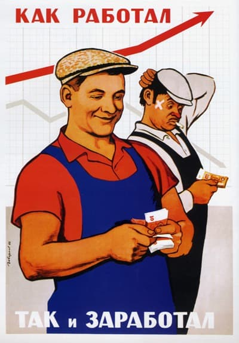
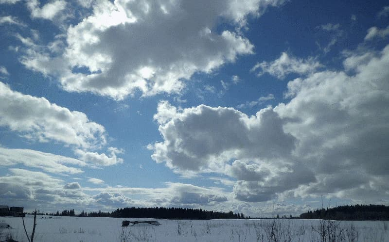

Воспоминания Тамары Адамовна Лукк.
В 1945 - 13 лет. В 1953 (год смерти Сталина) - 20 лет. В 1964 (год смещения Хрущева) - 32 года.
Вопрос: Расскажите, пожалуйста, о послевоенных годах, как складывалась судьба, как начали трудовую деятельность?
Ответ: До четвертого класса училась в Горках. Экзамены за 4-й класс сдавала в Ославье. Закончила семь классов Тресковицкой средней школы. Зимой в Тресковицах жили неделями (сперва по частным домам, потом в общежитии при школе), а с весны до раннего снега пешком по лесной
дороге, 5-6 человек.
В 1949 году окончила семь классов, исполнилось 16 лет. Поехала в Ленинград поступать в инструментально-музыкальный техникум (математика шла хорошо), не удалось, заболела мама. Но поступать куда-то было надо.
В Выборге годичная школа "счетовод-бухгалтер" по двойной системе, союзного значения. 1 октября начинались занятия, отзанималась год. В Выборге нас посылали на практику в деревни. Разгуливать в темноте мы остерегались, потому, что часто приходили финны в свои бывшие дома и уходили со словами - мы еще вернемся. К тому времени их всех выселили и население было вологодским , в основном. В 50-ом году вступила там в комсомол. Когда вернулась никому не сказала и на учет не встала. Но в дальнейшем с мужем обсуждали и вступление детей в комсомол и в партию и одобряли, считая, что это придает ответственности человеку. Ни я, ни муж в партии не были, но по работе мне предлагали вступить не раз. Партийными у нас все пастухи были.
Начала работать в своем колхозе счетоводом и работала пока не вышла замуж. Колхоз был очень скромный. Оплата производилась трудоднями, потому в колхозе велся громадный учет. Например, скосить конкретное поле стоило три трудодня. Его можно было скосить за день, заработав эти три трудодня. В конце года набиралась сумма трудодней. За каждый можно было что-то получить. Например, по 5 грамм меду, по 3 грамма шерсти. У меня за первый год накопилось 800 трудодней (включая учебу). По результатам работы колхоза оценивалась стоимость одного трудодня, в зависимости от того как сработал колхоз. В 50-ом году в нашем колхозе он стоил 5 копеек и в конце года я получила 160 рублей за 800 трудодней. В 54 году, уже в Тресковицах в богатом колхозе "Штурм" трудодень стоил 10 рублей.
Вопрос: Доводилось ли в эти годы выезжать из деревни и зачем?
Ответ: В Ленинград ездила каждую неделю на рынок продавать молоко, масло, сметану. Этим и жили. В 1946 году часто ездила в Нарву за хлебом, здесь его купить было негде. В Нарве целых домов совсем не осталось, жили в подвалах. Ленинград тоже был очень сильно разрушен.
Вопрос: Платили ли налоги?
Ответ: Налог платили со всего: за корову, за яблоню, за скотину, за землю... Два кило шерсти, кило масла, сколько-то яиц. Хоть есть у тебя куры, хоть нет, а яйца сдашь. Приемные пункты были в Волосово. Не скажу как в городе, а в Волосово в магазинах у нас было все. Денег не было.
Вопрос: А чем кормили скотину?
Вопрос: Было ли медобслуживание в послевоенное время?
Ответ: С медициной после войны было лучше, чем сейчас. Тогда больницы открывались, теперь закрываются. Сегодня мне чтобы в больницу попасть надо направление получить в амбулатории. Амбулатория в Большой Вруде, работает по расписанию, автобусы, практически, не ходят, потом в Волосово. Очень стало плохо.
Вопрос: Много ли пили алкоголя в деревне и были ли бездельники?
Ответ: У нас совсем не пили - финская деревня. Ну, может где-то, кто-то, но я не знаю. Пиво варили, это да. Лентяи наверно были, как и везде, но не особо. И не из-за водки. На то, какие сейчас, ничего похожего. У женщин вообще моды не было. Раз в году, когда все убрано, на "праздник урожая" женщины варили какой-то квас, что ли, хмельной, а может какой подобный напиток. Самогонки вообще не помню. Но у нас в доме мужчин то не было... Пиво варили. Особенно у мамы хорошо получалось. Это не брага была, брага другое - калью по-фински. Бочка с квасом всегда была.
Вопрос: Когда появилось электричество?
Ответ: Для нас, простых людей, электричество появилось в 1957 году. До этого электричество подавалось от дизеля, который работал на известковом заводе, но не всем, только работникам завода, в школу, сельсовет, на водонапорную башню. Простые люди использовали керосиновые лампы для освещения. Керосин продавался. С появлением электричества стало очень хорошо.
Вопрос: Где Вы брали воду?
Ответ: В деревне было три колодца, мы брали воду с ближайшего "на Федотке". Чтобы принести два ведра требовалось минут 40. Позднее появилась деревянная водонапорная башня для снабжения фермы, но там нам давали воду неохотно.
Вопрос: Ваш родной язык финский, мужа эстонский. Почему вы детей этим языкам не научили?
Ответ: А как их учить? Я на эстонском говорю слабо, муж на финском слабо. С первого дня наш общий язык был только русский. И в деревне, где я вышла замуж говорили только по-русски. Семья мужа возвратилась из Эстонии после войны намного раньше нас. Они туда на лошади уехали (под Тарту), на ней и вернулись, не дожидаясь формирования поезда. К тому моменту от их Тарасино ничего не осталось, все сгорело. В Волосово, в райисполкоме, они получили направление в Тресковицы, тут были пустые дома, выписали лес на строительство нового дома, сдали лошадь и всю сбрую. Быстро построились. В 1954-ом мы поженились и оба оказались в русскоговорящей деревне.
Вопрос: Известно, что в местности типично было хуторное хозяйство, как получилось, что хуторов не осталось?
Ответ: Про ликвидацию хуторов не знаю, это было до меня, в начале 30-х. Знаю, что на хуторах жили эстонцы, финны жили в деревнях. Сегодня хуторами называют места на которых когда-то либо жили, либо находились строения, либо это место чем-то отлично от остальных.
Вопрос: Как обстояло дело с образованием в послевоенные годы? Можно ли было закончить институт после деревенской школы.
Ответ: Можно и многие институты заканчивали. Школы были повсеместно. Мой брат, например, закончил неполную среднюю в деревне, потом 10 классов в Волосово, поступил в военное училище и закончил службу полковником. И он не один такой.
Вопрос: Как Вы встретили известие о смерти Сталина? И как люди вашего круга относились к советской власти?
Ответ: Дело было так. Утром завтракаем с подружкой, рассказываю ей, что видела удивительный сон, будто Сталин умер и лежит он в колонном зале (что такое колонный зал я и сейчас не знаю). Не успела договорить, заходит один гражданин, решил какие-то дела по работе и говорит: - "Кстати! А вы знаете что Сталин умер?". У нас никто волосы на себе не рвал, но другие рассказывали, что плакали и ревели. К советской власти относились нормально, принимали как есть. Мама Сталина не любила. Ленин, говорила интеллигентный, а Сталин посадский. Мы не горевали. Горевали, что 8 марта "на носу", а все мероприятия были отменены.
Вопрос: В вашей семье двое детей, а в семье ваших родителей восемь, что типично для того времени. В ваше время обычно было иметь немногодетные семьи?
Ответ: Детей двое не потому, что не прокормить, а я не знаю как так. Оглядываясь вокруг, у всех было по два, три, одному ребенку.
Записано в апреле 2012 года.
День похорон Тамары Адамовны был первым весенним днем 2013 года, с кучевыми облаками, которые бывают только летом.
